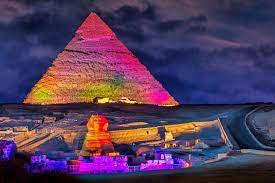
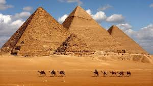
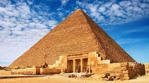
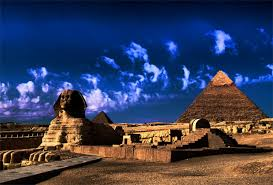
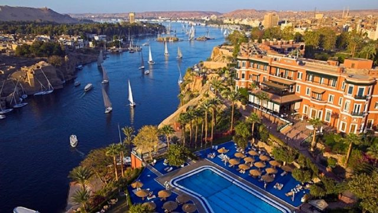
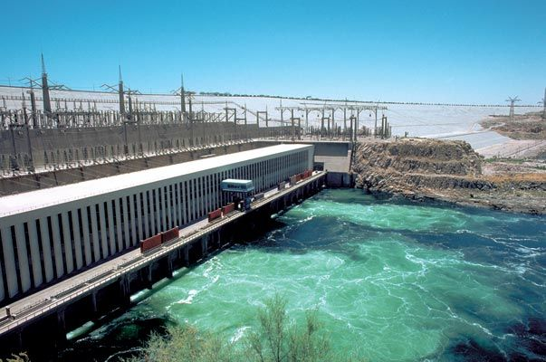

the best place for tourism
The Great Pyramid of Giza is the largest of all the Egyptian pyramids and is one of the Seven Wonders of the Ancient World. It is located around 5 miles to the west of the Nile River near the city of Cairo,Egypt is famous for its three pyramids built since many eras, characterized by its stability and strength of construction and its ability to withstand the difficult environmental and climatic conditions that have passed through the ages. And the largest of these pyramids is the Khufu followed by the pyramid of Khafre and the smaller pyramid isMnqraa . Each pyramid was named after the Pharaonic king who was buried there.
   The road of rams:on November 25, 2021, Egypt opened Rams Road to the public in the presence of Egyptian President Abdel Fattah al-Sisi in the city of Luxor amid great fanfare, after it completed the restoration work that took more than seven decades. The march included participants in pharaonic costumes, a symphony orchestra, light effects, professional dancers, boats on the Nile, and horse-drawn carriages At the beginning of the celebration, there were three “sacred” boats designed in the pharaonic style, walking in the heart of the Nile amid dazzling lights, and these “sacred boats” were designed in the Nile to symbolize the Holy Trinity of Thebes, Amun , Mut and Khonsu , which are the symbols of the Feast of the Epiphany of the ancient Egyptians. And the priests had to perform these rites twice a year: the first on the Feast of the Harvest, and the second on the Feast of the Ascension of the King. Thus, this road, which is called the Royal Processions Road , is the oldest religious ceremonial road in history.
Aswan is The Land of Beauty … Nubia is The Land of Gold … you can’t visit Aswan only once you have to repeat the Visit .. I Heard A lot of Similar words before visiting Aswan & Nuba and to be honest i Though that people exaggerating but when i Visited it I Knew that they Were right , That Every Single Word is simply true and the Fact is even more beautiful Specially Nuba . In This Article I Will Show you some abnormal pictures for Aswan that most of us didn’t see before Aswan contains a wonderful group of recreational parks, which are located on the banks of the Nile River. It is a more than wonderful tourist destination and has a special nature and place among the tourist destinations in Egypt.
The Aswan High Dam is one of the important tourist areas that tourists are keen to visit. The High Dam is distinguished by the grandeur of its design and historical importance, as well as the immensity of its architectural construction, at the global level during the twentieth century. The goal of building this huge project is to protect the country from the floods of the Nile River, and to work to preserve it in the giant artificial lake reservoir for the time of need in the drought years. And the water from that lake is pushed through holes in the dam, to represent a terrible artificial waterfall, which rotates the turbines to generate electricity
